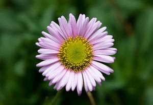
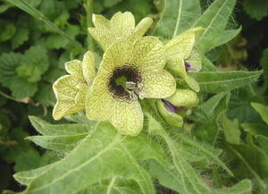
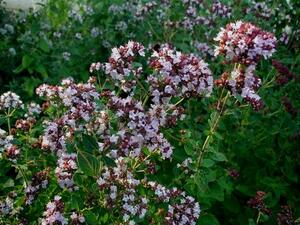
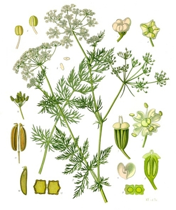
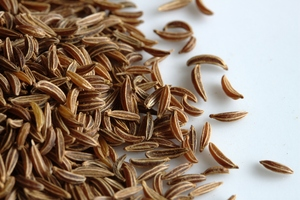
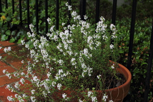
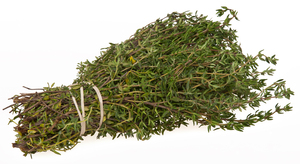
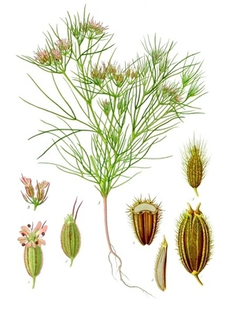
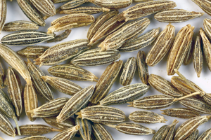

ⲉⲛⲅ, ⲉⲛⲟⲩⲛⲅ S, ⲉⲛⲟⲩⲕ B (Rec 7 25 whence ?) nn, a plant: Is 55 13 S (B = Gk) ⲉⲡⲙⲁ ⲛⲟⲩⲉⲛⲅ (Ciasca), ⲛⲟⲩⲉⲛⲟⲩⲛⲅ (Mus 14 198, Mor) κόνυζα fleabane (BM 726 81, K 197 سوكران hyoscyamus), P 44 83 = 43 59 S ⲟⲣⲓⲕⲁⲛⲟⲩ (ὀρίγανον) · ⲛⲟⲩⲛⲕ كراويا، صعتر (l كرويا) thyme or cumin. Cf hierogl ꞽnk, also ꞽnnk, & DM ꞽnq (v PDém Lille 1 65).
(noun)
species
a plant









1: (a plant), 2: fleabane?, 3: hyoscyamus?, 4: oregano?, 5: caraway (Persian cumin)?, 6: thyme?, 7: cumin?
complete
56b
228a
483b
228a
ⲛⲟⲩⲛⲕ v ⲉⲛⲅ.
483b
ⲟⲩⲉⲛⲅ v ⲉⲛⲅ.